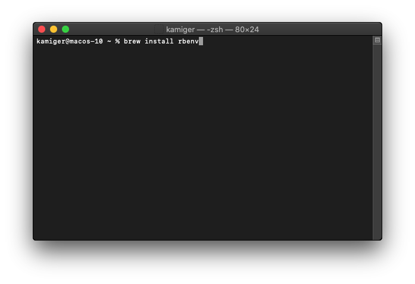
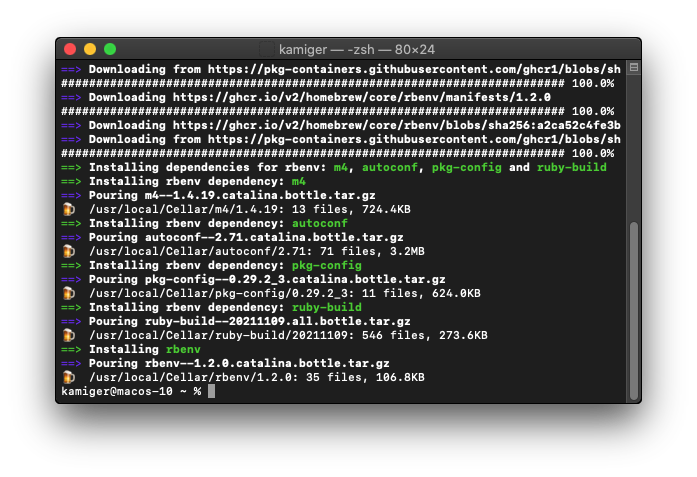
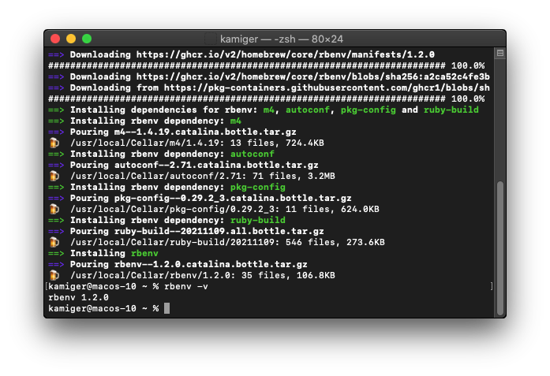
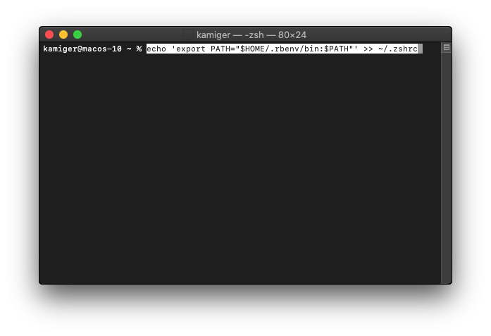
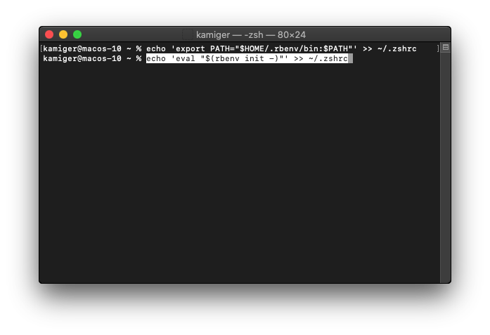
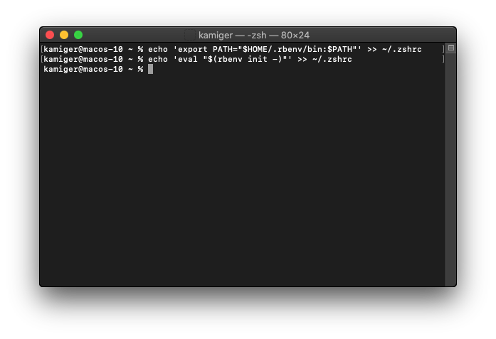
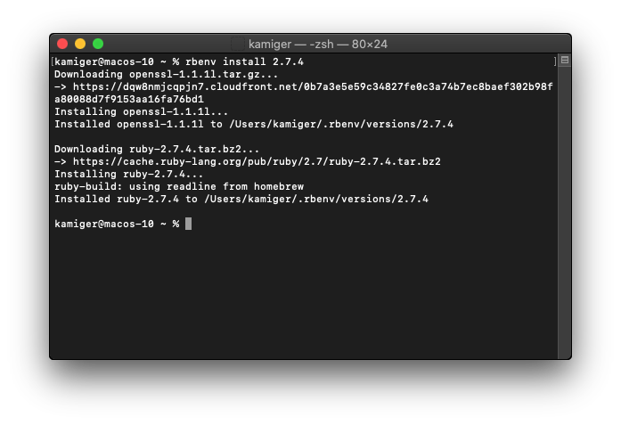
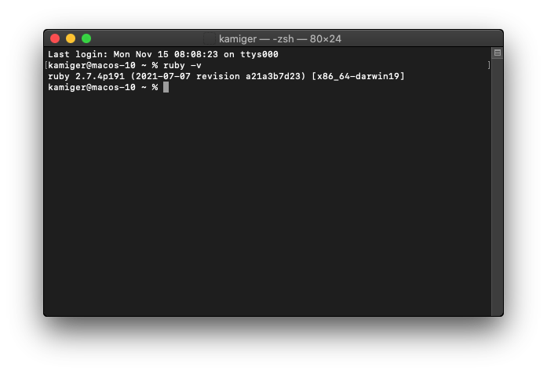

在 MacOS Catalina 安裝 Ruby
以下教學將使用 rbenv 作為安裝 ruby 的工具，rbenv 是一款讓你可以安裝多個 ruby 版本，並且隨意切換要使用的 ruby 版本的工具。
安裝 rbenv
在終端機輸入 brew install rbenv：

按下 Enter 開始安裝。

確認 rbenv 是否安裝完成
rbenv 安裝完成後，輸入 rbenv -v 查看版本。

rbenv 初始化
如果你使用的是 zsh，在終端機輸入以下指令：
echo 'export PATH="$HOME/.rbenv/bin:$PATH"' >> ~/.zshrc：

echo 'eval "$(rbenv init -)"' >> ~/.bashrc：

輸入完成後的畫面：

如果你使用的是 bash，在終端機輸入以下指令：
echo 'export PATH="$HOME/.rbenv/bin:$PATH"' >> ~/.zshrcecho 'eval "$(rbenv init -)"' >> ~/.bashrc
如果你不知道你用的終端機是什麼，那就以上四個指令都輸入一遍就對了。
使用 rbenv 安裝 ruby 2.7.4
在安裝 ruby 之前需要關掉重開終端機。
在終端機輸入 rbenv install 2.7.4：
按下 Enter：

ruby 2.7.4 安裝完成後，還需要指定預設使用的 ruby 版本為 2.7.4。
在終端機輸入 rbenv global 2.7.4：
確認是否安裝完成
在終端機輸入 ruby -v：

看到 ruby 2.7.4... 就代表安裝完成。